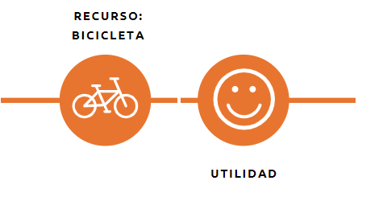
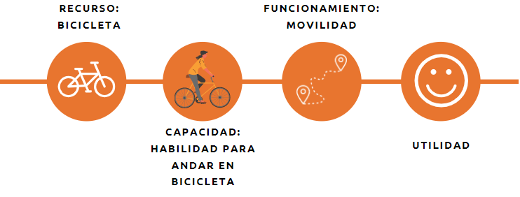

Estrategia de Desarrollo Social DECOM 2021
PRESENTACIÓN
La nueva estrategia de desarrollo social está impulsada por la necesidad de reconstruir mejor el bienestar de nuestra comunidad, que hoy enfrenta las consecuencias profundas de la crisis sanitaria y económica provocada por la pandemia de COVID19 que afecta al mundo, y se enmarca en un proceso de modernización en la gestión de los programas sociales de DECOM impulsado por la Dirección.
En términos técnicos este proyecto se apoyó en el trabajo desarrollado por el equipo de Oxford Poverty & Human Development Initiative (OPHI), que propone un marco económico conceptual para observar la pobreza y bien-estar (well-being) desde un enfoque multidimensional. El ejercicio de definición de un indicador de bienestar local Las Condes, está inspirado en el índice de pobreza multidimensional que en Chile se mide desde el año 2013.
El concepto de bienestar que aquí se presenta, sigue las reflexiones del enfoque de capacidades de Sen1 , cuyo trabajo en torno al desarrollo humano ha puesto el foco del bien-estar en las personas, sus experiencia y valoraciones respecto del tipo de vida que desean llevar, incorporando una mirada holística del desarrollo económico y el bienestar de las sociedades.
El modelo de bienestar local Las Condes, observa una cantidad de diez dimensiones en su primera etapa de implementación; (1) Educación, (2) Salud, (3) Empleo, (4) Redes de apoyo, (5) Vivienda, (6) Transporte, (7) Participación vecinal, (8) Recreación y Deportes, (9) Apoyo social y (10) Medioambiente. Estas dimensiones fueron definidas en conjunto con los equipos de DECOM de acuerdo a la oferta de programas sociales existentes.
El trabajo realizado se divididó en distintas etapas que se fueron desarrollando de manera progresiva, cada una con hitos y productos entregados a la Dirección. Como Departamento de Estudios agradecemos la colaboración de los distintos equipos involucrados en las diferentes etapas de este proceso, y esperamos que esta estrategia de desarrollo social contribuya al bien-estar de los vecinos y vecinas de Las Condes.
ETAPAS DE TRABAJO

1. En una primera etapa de trabajo se realizó un diagnóstico sobre el estado de la oferta programática de DECOM. Se revisaron los 77 programas sociales, y se evaluaron las líneas de acción de estos dentro de las dimensiones del modelo de pobreza multidimensional: Educación, Salud, Trabajo y Seguridad social, Vivienda y entorno, y Redes y Cohesión social.
Al mismo tiempo, se revisaron los instrumentos de focalización y la coherencia de los indicadores utilizados con la definición de la población objetivo de los programas, y la validez interna de estos instrumentos en relación a los criterios definidos en la evaluación de los distintos equipos.
2. La segunda parte del proceso correspondió a la definición teórica de un modelo de bienestar social local. En base a una revisión extensa de literatura académica se diseñó un modelo multidimensional de bienestar en el cual se encasilló la oferta programática de DECOM existente.
El resultado de este proceso arrojó un modelo de bienestar social local con 9 dimensiones que consideró la distintas líneas de acción de las políticas sociales ejecutadas por DECOM. Salud, Educación, Empleo, Transporte, Participación, redes y cohesión social, Medioambiente, Vivienda, Servicios básicos y alimentación, y Deportes, fueron las dimensiones levantadas en este proceso.
3. En la tercera etapa se presentó el plan de abordaje programático en base al modelo de bienestar definido. Se reorientaron los distintos programas sociales de DECOM dentro de un diseño de intervención para la protección de brechas de bienestar observadas en los vecinos y vecinas de Las Condes.
En esta parte del proceso destaca la creación de un instrumento de ventanilla única que apunta a una lectura inicial de la situación de los vecinos y vecinas que se acercan a la Dirección de Desarrollo Comunitario, generando un diagnóstico integral sobre la vulnerabilidad del usuario.
Lo anterior, fue acompañado por la habilitación de un sistema informático integrado que dispone de las herramientas necesarias para la gestión de la información recogida a través del instrumento de ventanilla única, y la creación de métricas requeridas para la operacionalización del modelo de bienestar y la lectura de brechas.
En la etapa de desarrollo informático, destaca el soporte brindado por el Banco Mundial y la implementación del sistema de Gestión Social Local (GSL) que en su modulo base nos permite contar con un sistema integrado de datos administrativos y fuentes de datos externas como el Registro Social de Hogares, y un catálogo actualizado para la gestión de los distintos beneficios sociales y subsidios entregados por DECOM.
4. Finalmente,
DEFINICIÓN DE UN MODELO DE BIEN-ESTAR LOCAL
“El bienestar se evalúa en la capacidad que poseen las personas de lograr aquellos resultados que por diversos motivos consideran valiosos para sus vidas […]” – Amartya Sen.
La necesidad de contar con mediciones de bienestar más complejas que la observación de condiciones puramente económicas, queda manifiesta en el reporte de la Comisión sobre la medición del Desarrollo Económico y Progreso Social de Paris, elaborado por Stiglitz, Sen y Fitoussi (2009).
Desde allí, se ha avanzado de manera sustantiva en la creación de indicadores multidimensionales de bienestar en diversos países. El Reino Unido, Alemania, Australia, Nueva Zelanda o Bután con su llamativo índice nacional bruto de felicidad, han seguido este camino. Si bien no hay métricas absolutas para la medición del bienestar, existe una demanda creciente por este tipo de indicadores para guiar el diseño de las políticas públicas (Alkire, 2015).
En general las propuestas para la definición de modelos de bienestar se apoyan en el enfoque de capacidades de Amartya Sen (Alkire, 2005; Comim, Mozaffar & Qizilbash, 2008).
¿Qué es el enfoque de capacidades?
El enfoque de capacidades es un marco teórico moral que propone evaluar el bienestar en función de las oportunidades reales que poseen las personas para alcanzar aquellos estados que consideran valiosos. El enfoque de capacidades vincula el desarrollo humano con la expansión de las libertades que disfrutamos los individuos para llevar el tipo de vida que por diversas razones valoramos (Sen, 2001).
Sen pone el énfasis en las capacidades que permiten a las personas alcanzar los resultados que aspiran para sus vidas (well-being), antes que en un determinado nivel de renta. A través del enfoque de capacidades se propone superar algunos de los axiomas de la economía tradicional “bienestarista” (welfare) centrados en la satisfacción de preferencias, o dicho de otro modo que entienden la ausencia de bienestar exclusivamente como la falta de recursos.
Bien-estar (well-being) implicancias prácticas para las políticas públicas:
Enfoque de productos (commodities)

Enfoque de capacidades (capabilities)

El recurso importa pero es solo instrumental. Lo sustancial son las capacidades que poseemos las personas de convertir esos recursos en funcionamientos deseables. No existe relación entre poseer la bicicleta y el bien-estar. Lo que realmente importa es la habilidad de utilizar la bicicleta para poder movilizarse. Cuando pensamos en una personas en situación de discapacidad, esta requiere un conjunto más amplio de recursos para poder utilizar la bicicleta y alcanzar el funcionamiento de desplazarse, no le basta con tener la bicicleta.
Lo mismo aplica en el caso de una mujer emabarazada que tiene requerimientos nutricionales especiales. No podemos asumir que por tener un nivel de renta o una canasta de alimentos realmente va a poder acceder a un estado nutricional óptimo. Se requiere un set más amplio de recursos para poder alcanzar el funcionamiento nutricional acorde a su condición.
En términos prácticos cuando diseñamos las políticas públicas con atención en la satisfacción de preferencias, generamos asistencia basada únicamente en transferencia de recursos (enfoque de productos), y dejamos de prestar atención a las distintas combinaciones de funcionamientos (seres y haceres) que permiten a las personas realmente lograr aquello que aspiran para sus vidas. Desde el enfoque de productos suponemos que si tienes la bicicleta entonces alcanzaste el bienestar (no necesitas ayuda). En cambio, el enfoque de capacidades nos advierte que la planificación de políticas sociales no pasa por una definición fáctica de un set de bienes primarios que las personas necesitan, sino que se debe dotar de agencia y empoderamiento a las personas para que puedan desarrollarse libremente.
COMPONENTE DE TRANSFERENCIAS CONDICIONADAS
Alkire, S. (2005). ‘Why the capability approach?’, Journal of Human Development, vol. 6(1), pp. 115–133
Alkire, S., & Foster, J. (2011). Counting and multidimensional poverty measurement. Journal of Public Economics, 95(7–8), 476–487.
Alkire, S. (2015). The capability approach and well-being measurement for public policy. In OPHI Oxford poverty & human development initiative. Working paper 94. Oxford University
Comim, F., Qizilbash, M., & Alkire, S. (2008). The capability approach: Concepts, measures and applications (1et ed.). New York: Cambridge University Press
Nussbaum, M., & Sen, A. (1993). The quality of life. Clarendon Press.
Sen, A. (1985). Well-Being, Agency and Freedom: The Dewey Lectures 1984. The Journal of Philosophy, 82(4), 169–221.
Sen, A. (2001). Development as freedom (1st ed.). Oxford: Oxford Paperbacks.
Stiglitz, J. E., Sen, A., & Fitoussi, J.-P. (2009). Report by the commission on the measurement of economic performance and social progress. Citeseer.
Amartya Sen es un economista de origen bengalí (India), cuyo trabajo académico ha girado entorno a la idea del desarrollo humano y la libertad. En 1998 obtuvo el Premio Nobel de Economía por sus contribuciones al análisis del bienestar económico. Actualmente es profesor titular de Economía y Filosofía en la Universidad de Harvard, y profesor visitante en decenas de universidades alrededor del mundo.↩︎

 (2) 29507613 / (2) 29507601
(2) 29507613 / (2) 29507601  Avenida Apoquindo 9070, Las Condes
Avenida Apoquindo 9070, Las Condes  http://github.com/EstudiosDecom
http://github.com/EstudiosDecom  Felipe Vega (desarrollador)
Felipe Vega (desarrollador)